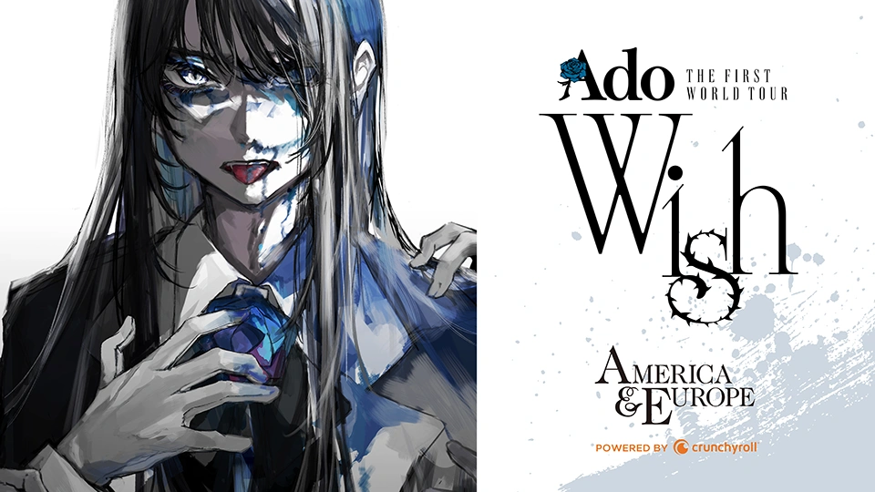
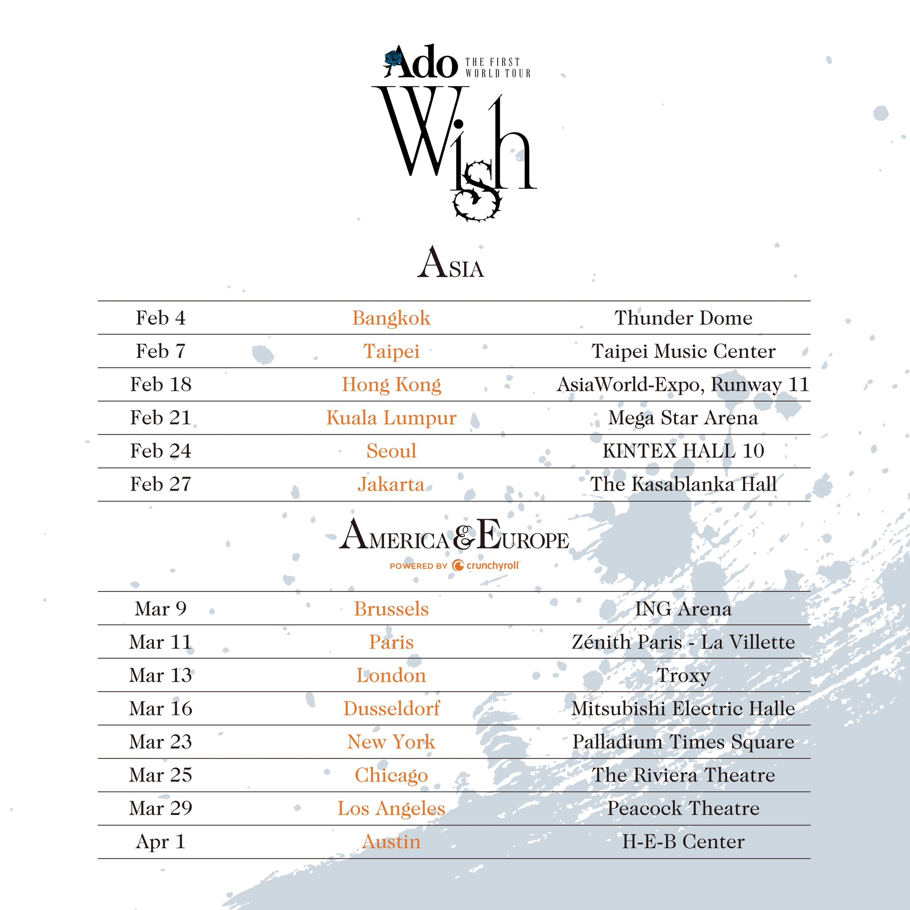

Wish: La 1º Gira de ADO
Fue su primera gira mundial (“Ado THE FIRST WORLD TOUR ‘Wish’”), que tuvo lugar entre febrero y abril de 2024. Recorría Asia, Europa y América. Algunas de las ciudades/conciertos: Bangkok, Taipei, Hong Kong, Kuala Lumpur, Seúl, Jakarta; en Europa: Bruselas, París, Londres, Düsseldorf; en EE.UU.: Nueva York, Chicago, Los Ángeles, Austin. Durante la gira, estaba prohibido hacer fotos, grabaciones de vídeo o usar prismáticos/binoculares. Su nombre “Wish” (deseo) se debe a que ella tenía la "wish" (deseo) de dar a conocer la cultura utaite (cantantes que interpretan vocaloid) al mundo.
